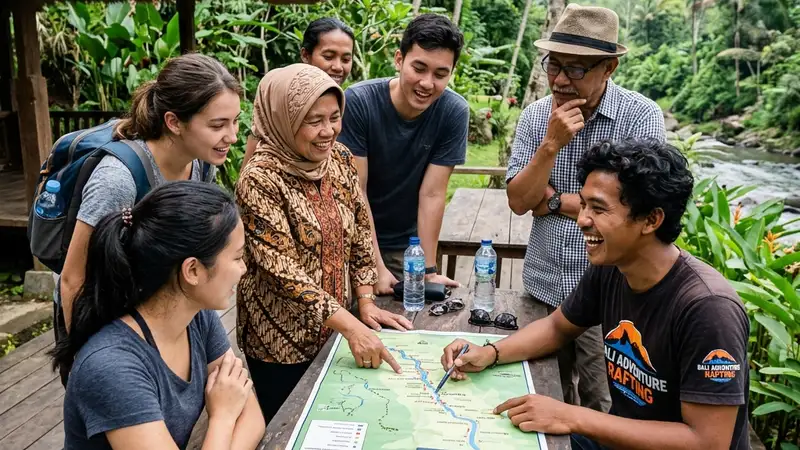

Manfaat outbound acara purna tugas mencakup penguatan rasa dihargai, dukungan transisi psikologis, dan penguatan hubungan antara karyawan dan instansi menjelang pensiun.
- Outbound acara purna tugas membantu meredakan tekanan psikologis yang lazim menyertai masa transisi menuju pensiun.
- Kegiatan ini menjadi bentuk apresiasi formal atas kontribusi karyawan selama bertahun-tahun mengabdi.
- Momen kebersamaan dalam outbound memperkuat hubungan sosial antara karyawan purna tugas dan rekan kerja.
- Manfaat ini dirasakan pula oleh instansi melalui citra internal yang lebih positif di mata karyawan aktif.
- Efeknya dapat bertahan lebih lama jika acara dirancang dengan mempertimbangkan kebutuhan spesifik peserta.
Apa Manfaat Utama Outbound Acara Purna Tugas bagi Karyawan?
Manfaat utama bagi karyawan adalah rasa dihargai secara formal, ruang refleksi atas perjalanan karier, dan dukungan emosional menjelang perubahan besar dalam hidupnya.
Ketika seseorang memasuki masa pensiun, ia tidak hanya kehilangan rutinitas harian, tetapi juga sebagian identitas yang selama ini melekat pada perannya sebagai pekerja. Outbound acara purna tugas memberi ruang untuk merayakan perjalanan tersebut secara positif, alih-alih membiarkan masa kerja berakhir tanpa penghormatan yang layak. Suasana santai dan hangat dalam kegiatan ini juga membuka ruang bagi karyawan untuk berbagi cerita, pengalaman, dan pesan kepada rekan kerja yang masih aktif bertugas.
Bagaimana Outbound Membantu Proses Transisi Menuju Masa Pensiun?
Outbound membantu proses transisi dengan menghadirkan penutupan yang positif atas masa kerja, sehingga karyawan lebih siap secara emosional memasuki fase kehidupan berikutnya.
Transisi menuju pensiun kerap dikategorikan sebagai salah satu perubahan hidup yang cukup signifikan. Skala Holmes dan Rahe atau Social Readjustment Rating Scale yang dipublikasikan pada 1967 menempatkan pensiun sebagai peristiwa hidup dengan skor stres yang cukup tinggi, sejajar dengan perubahan besar lain seperti perpindahan tempat tinggal atau perubahan peran keluarga. Kegiatan yang bersifat suportif dan tidak terburu-buru seperti outbound acara purna tugas dapat membantu memperhalus proses adaptasi tersebut, karena karyawan merasa proses berhenti bekerja diakhiri dengan cara yang bermartabat, bukan sekadar formalitas administratif.
Selain itu, sesi kebersamaan dalam outbound memberi kesempatan bagi karyawan purna tugas untuk secara bertahap menerima perubahan peran, alih-alih mengalami perubahan tersebut secara mendadak begitu hari kerja terakhir berakhir.
Mengapa Instansi Perlu Memperhatikan Sisi Psikologis Karyawan yang Purna Tugas?
Instansi perlu memperhatikan sisi psikologis karyawan purna tugas karena pengalaman pelepasan yang baik turut memengaruhi citra internal dan motivasi karyawan yang masih aktif bekerja.
Karyawan aktif cenderung memperhatikan bagaimana instansi memperlakukan rekan kerja yang memasuki masa pensiun. Apabila proses pelepasan terasa hangat dan penuh penghargaan, hal ini dapat memperkuat kepercayaan karyawan terhadap institusi tempat mereka bekerja dalam jangka panjang. Sebaliknya, pelepasan yang terkesan seadanya dapat menimbulkan persepsi bahwa kontribusi jangka panjang kurang dihargai.
Dari sisi karyawan yang purna tugas, dukungan psikologis melalui kegiatan bersama juga dapat mengurangi risiko munculnya perasaan kehilangan peran secara berlebihan setelah tidak lagi aktif bekerja. Uraian mengenai cara memilih penyedia jasa yang tepat untuk mendukung tujuan ini dapat dibaca pada cara memilih penyedia jasa outbound acara purna tugas yang tepat.
Manfaat Outbound Acara Purna Tugas bagi Instansi
Manfaat bagi instansi meliputi penguatan citra internal, peningkatan loyalitas karyawan aktif, serta terjaganya hubungan baik dengan mantan karyawan.
Instansi yang secara konsisten menyelenggarakan pelepasan yang layak umumnya memiliki reputasi internal yang lebih baik di mata karyawannya sendiri. Hubungan baik dengan mantan karyawan juga dapat bermanfaat dalam berbagai kesempatan, misalnya ketika instansi membutuhkan masukan dari purnawirawan atau ketika mantan karyawan berperan sebagai duta tidak resmi bagi institusi di lingkungan sosialnya.
Faktor yang Memperkuat Manfaat Outbound Acara Purna Tugas
Faktor yang memperkuat manfaat kegiatan ini meliputi keterlibatan keluarga, kesesuaian aktivitas dengan kondisi fisik peserta, serta suasana yang tidak terburu-buru.
Keterlibatan keluarga karyawan purna tugas dapat menambah dimensi personal pada acara, karena keluarga turut merasakan momen penghargaan tersebut. Kesesuaian aktivitas dengan kondisi fisik peserta memastikan seluruh peserta dapat mengikuti rangkaian acara dengan nyaman. Suasana yang tidak terburu-buru memberi ruang bagi peserta untuk benar-benar menikmati momen kebersamaan, alih-alih sekadar menyelesaikan rangkaian kegiatan secara formal.
FAQ
Apakah outbound acara purna tugas benar-benar berpengaruh terhadap kesiapan psikologis karyawan?
Kegiatan ini dapat membantu memperhalus proses adaptasi menuju pensiun dengan memberikan penutupan yang positif, meskipun tidak menggantikan program persiapan pensiun yang lebih komprehensif.
Apakah manfaat outbound acara purna tugas hanya dirasakan oleh karyawan yang pensiun?
Manfaatnya juga dirasakan instansi melalui penguatan citra internal dan peningkatan kepercayaan karyawan aktif terhadap cara institusi memperlakukan karyawannya.
Apakah keluarga karyawan perlu dilibatkan dalam outbound acara purna tugas?
Melibatkan keluarga tidak wajib, namun dapat menambah kehangatan suasana dan memberi dimensi personal yang lebih kuat pada acara pelepasan.
Arya
penulis artikel yang sudah berpengalaman di dalam dunia wisata outbound Batu Malang.